Project Minder
A local-only dev dashboard that auto-scans your projects and surfaces the context you need — without leaving your browser.
A local-only dev dashboard that auto-scans your projects and surfaces the context you need — without leaving your browser.
Auto-scans one or more dev directories in parallel and renders every project as a card — git branch, dirty-file count, tech stack, and status at a glance. Background git checks populate amber +N indicators as results arrive. Search, filter by status, and sort across all projects in seconds. Hide noisy projects via the three-dot menu and restore them from the dashboard footer. Multiple scan roots let you monitor projects across different drives or locations from a single dashboard.
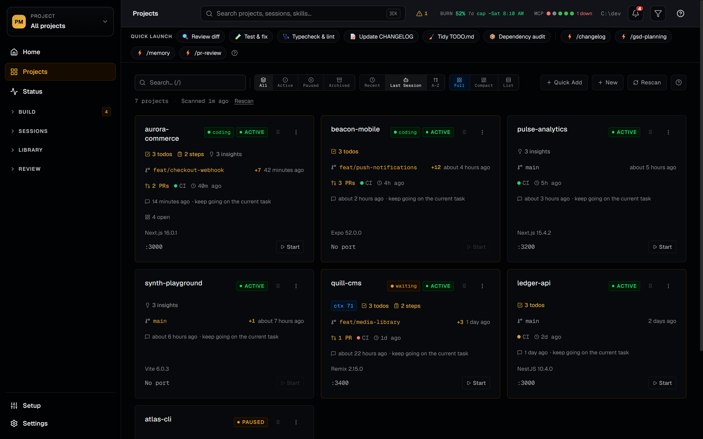

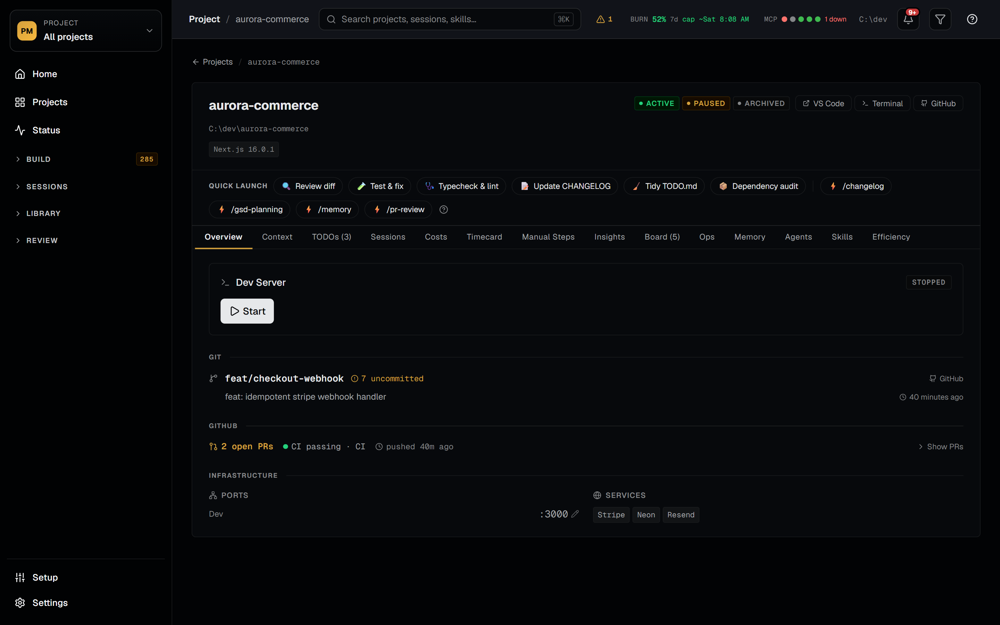
Dashboard cards show a live green "coding" or amber "waiting on you" badge when a Claude session is active — inferred from the JSONL tail and refreshed automatically every 15 seconds. When the Claude CLI is recent enough to expose claude agents --json, the badge gains two further states: a solid green "live" with PID and session name when the CLI confirms a running process, and a dim outlined "live?" that flags stale hook events from a crashed session the CLI no longer sees. The Sessions browser supports full-text content search across message bodies (not just prompts), auto-refreshes without a manual reload, and highlights matched snippets inline. Session recaps — written by Claude Code's /recap command — surface as the primary session label with an amber badge, with full recap history on the detail page. Session timelines render fenced code blocks and inline code spans. Insights extraction scrapes ★ Insight blocks from conversation history into searchable per-project files. The Usage dashboard breaks down token spend by model, project, and 13 activity categories — worktree sessions are merged into their parent project — with CSV/JSON export and a Compare toggle that overlays a delta strip diffing the current period against the immediately preceding window of equal length. Sessions carry Claude Code's own title when it has set one, an entrypoint filter separates sessions you started by hand from scripted and scheduled runs, a permission-mode chip marks where the session switched modes on the timeline, and a per-session Hooks tab shows every hook that fired.


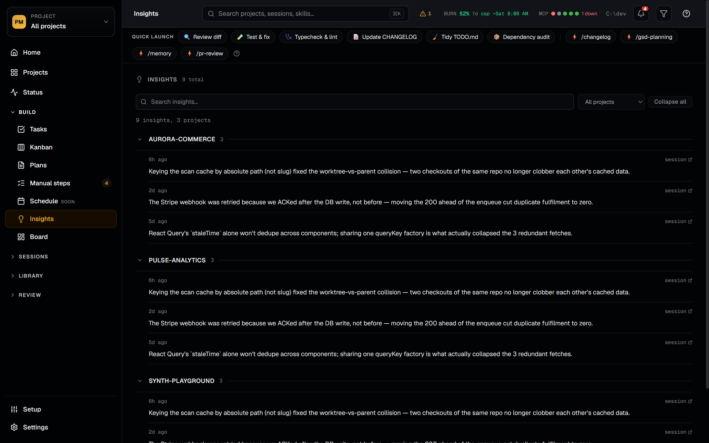
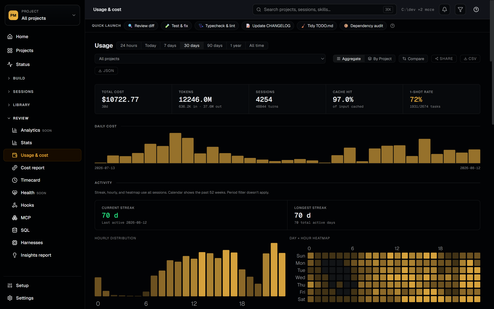
Every Claude Code agent persona and slash skill on your machine, indexed in one place. Project Minder walks ~/.claude/, ~/.agents/, every installed plugin, and per-project .claude/ folders to build a unified catalog with usage counts, last-invoked timestamps, and full provenance. Marketplace badges show where each item came from with version and commit SHA — and an amber dot appears the moment an upstream update lands, checked in the background via git ls-remote and the GitHub tree API on a 24-hour TTL. Expand any row to see tools, model, body excerpt, recent sessions, and per-row actions: open source, show in folder, copy URL / SHA / path, re-check. Per-project tabs split Available from Invoked here so you can see which agents and skills you actually use on each repo.

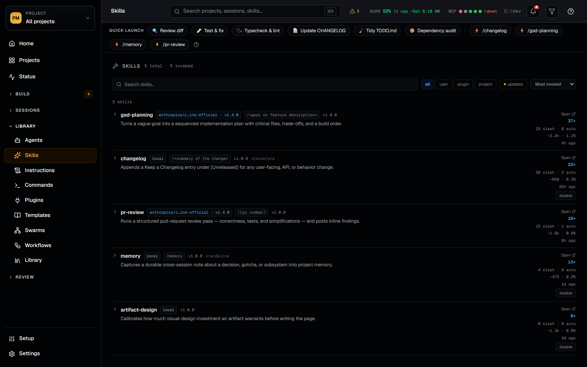

The System Status page gives you a real-time cross-project view of every active Claude Code session — bucketed into Needs Approval, Working, Waiting for You, and Other/Stale. Status is inferred from the JSONL tail every 3 seconds using a cross-poll mtime heuristic: stalled write-type tools signal a pending permission prompt; a clean end_turn means Claude is waiting for your reply. Worktree sessions appear labeled by branch. The nav badge counts how many sessions need your attention right now.
The Memory tab on each project detail page surfaces Claude Code's auto-memory files — MEMORY.md rendered as a structured overview, with individual memory files listed by type (user, feedback, project, reference) and full on-demand content rendering.


TODO tracking reads each project's TODO.md — click any item to check it off directly in the UI, add new ones inline, or use the cross-project Quick Add modal (Shift+T) to append ideas to multiple projects at once. The Manual Steps tracker surfaces MANUAL_STEPS.md entries across all projects with interactive checkboxes that toggle on disk. A file watcher fires toast and OS notifications when Claude adds new steps mid-session. Worktree overlay surfaces TODOs, Manual Steps, and Insights from active Claude Code worktrees in collapsible sections on project detail pages.
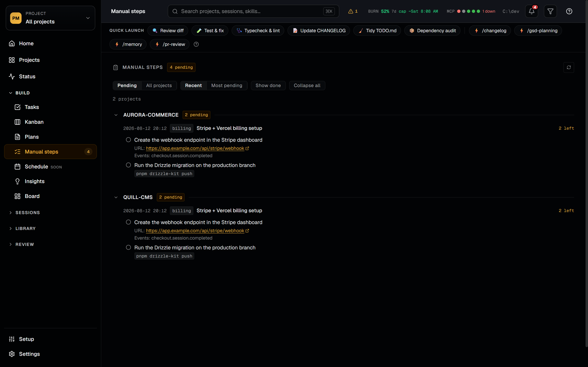
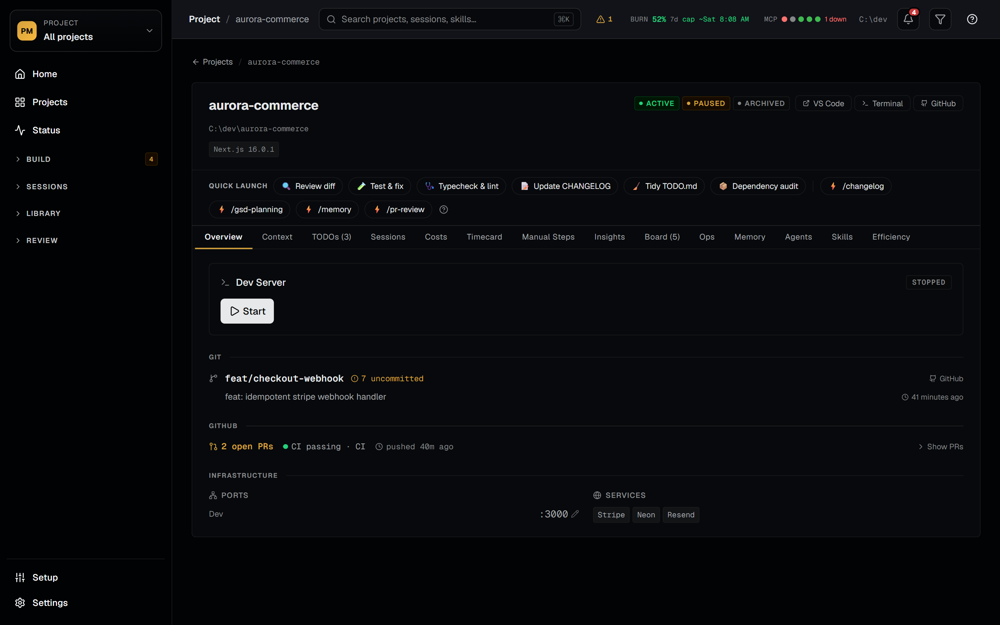
Planning that lives in your repo instead of a SaaS. BOARD.md is a plain-markdown board of epics and issues, parsed into a cross-project Board with search and filters, plus a per-project tab with inline status editing. Writes are serialized (resolve the canonical file, lock, write atomically, re-parse), so the file on disk stays the source of truth and your hand edits survive. Planning is canonical to the main checkout: a write from inside a worktree redirects to the parent BOARD.md rather than fragmenting per branch. Any issue promotes to a dispatcher task in one click and returns to done when that task finishes. Claude can drive the same board over MCP, so an agent can file what it found without leaving the session.
The Ops panel answers "who gets paged, and how do I restore this." Half is auto-detected from the repo: deploy targets, external services, the database and its managed provider (Neon, PlanetScale, Supabase, Upstash, Railway, Render, inferred from DATABASE_URL), Dependabot, and every Vercel and GitHub Actions cron merged into one schedule. The other half is your OPERATIONS.md runbook — backups, monitoring, on-call, secrets, recovery — matched tolerantly so synonymous headings still land in the right section. A coverage line ("3 of 9 operational facts captured") tells you what's still undocumented.
A GitHub strip on each card and detail page shows open PRs, CI state, and last push through your own already-authenticated gh CLI. No token in a config file, no shell string, and a missing or unauthenticated gh degrades to a quiet "unavailable" instead of breaking a scan. Open PRs are cross-linked back to the Claude sessions that created them.
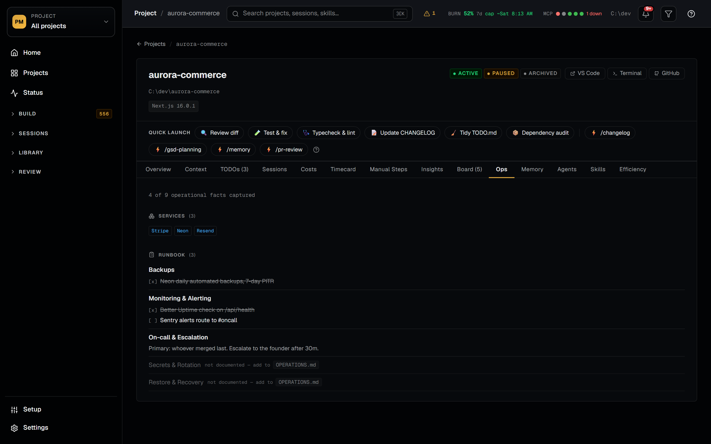
OPERATIONS.md runbook half.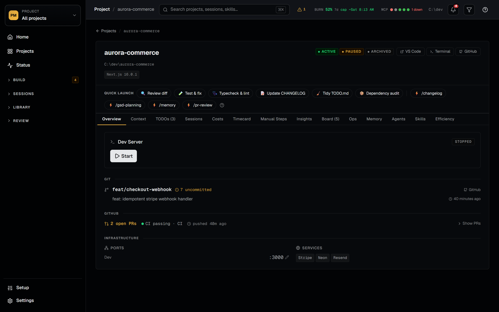
gh.The Stats dashboard gives a portfolio-wide overview: tech stack distribution, project health, and Claude Code usage across all sessions. Each project earns an A–F efficiency grade from its session analytics, snapshotted once per calendar day so the dashboard can classify a trend — a worded ↑ improving / ↓ declining / = stable / • new badge on the project's Efficiency tab and a compact green ↑ / red ↓ arrow next to the grade letter on each card — by comparing today's grade against the most-recent prior-day snapshot. Dev server control lets you start, stop, and restart managed servers from the UI with live stdout/stderr output. The Setup guide provides copy-paste CLAUDE.md instruction blocks and Claude Code hooks — apply them to any managed project with one click.
A Telemetry section folds in what Claude Code's own OpenTelemetry stream and session transcripts report about themselves: Permission Denials (what Claude asked for and you refused, grouped by tool), Tool Provenance (which tools came from MCP servers versus built-ins), Hook Activity with an explicit source toggle between the OTEL and transcript backends, and Tool Latency percentiles. One period control drives the whole section, and every card names the data source it read, so a number is never ambiguous about where it came from.
Per-project code intelligence tabs read the same session index from the other direction: Hot Files ranks what Claude actually touches most, File Coupling surfaces files that keep getting edited together, and Error Propagation traces which failures cascaded into others.
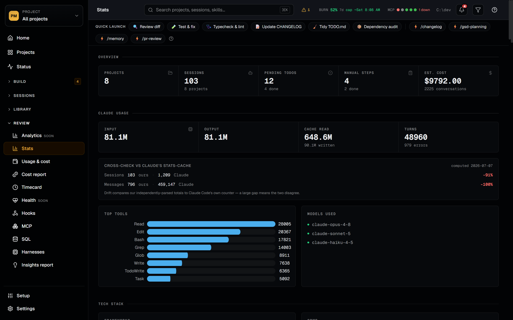
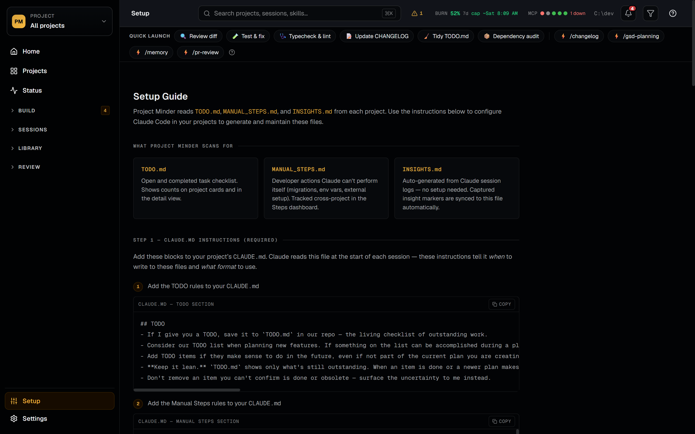

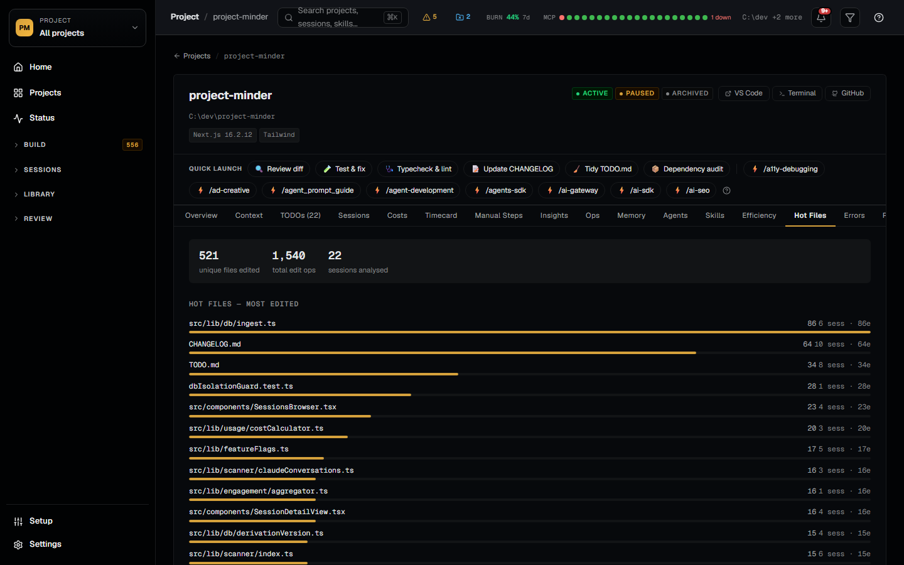
A cross-tier browser for every CLAUDE.md and auto-memory file Claude reads, across all scopes — user, project, and Claude Code's auto-memory directory. The budget bar tracks total memory size against the 32 KB soft cap; stale, unread, and orphan filters surface files that have decayed. Inline edits write atomically with a backup and a 3-way conflict detector. The Memory Seed page generates a starter set — user_role, user_workstyle, reference_repos, reference_dev_environment, per-project — synthesized from your existing scan data so a fresh Claude Code install walks in already knowing your stack. Memory Triage recommends archive or soft-delete actions per file based on read telemetry, age, and broken references — and never auto-deletes.

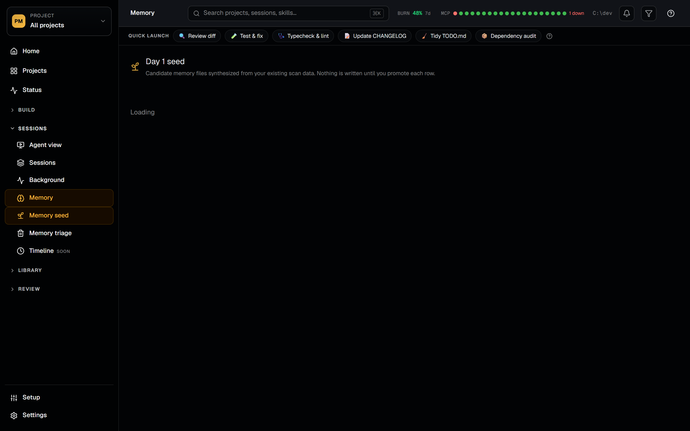

The Agent View is a real-time Kanban of every active Claude Code session across your projects — bucketed into Needs Input, Working, Idle, Completed, Failed, and Stopped. Each card surfaces a cost chip, a context-fill bar (red above 85%), a +N sub-agent chip, and an amber tool-error badge when the last tool call failed. Liveness merges three sources in priority order: the Claude daemon roster for claude --bg jobs, Live Activity hook events, and JSONL tail inference as the universal fallback. The Kanban page unifies sessions with dispatcher Tasks and adds a DAG view (Sugiyama layout with D3 edges) and a Gantt view with real execution windows. Tasks support dependency edges with DFS cycle prevention; Swarms spin up 2–8 coordinated agents in shared or worktree mode.
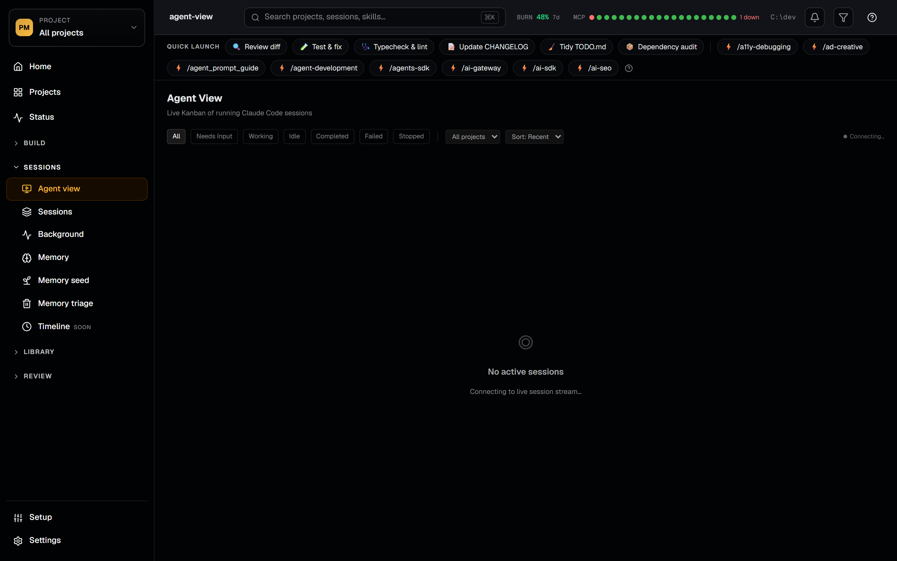

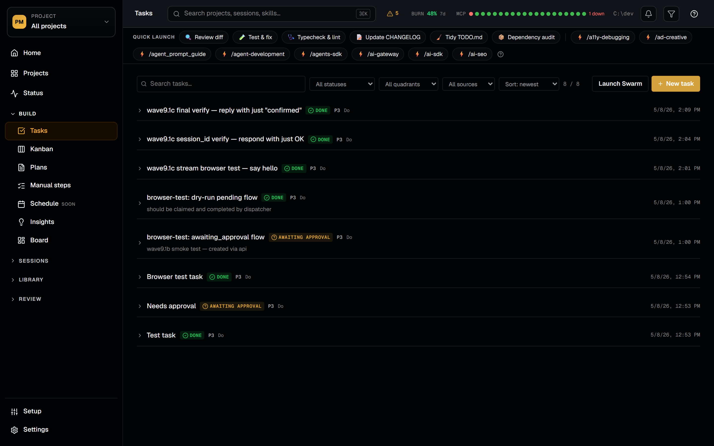

Templates package a curated bundle of Claude Code config — agents, skills, commands, hooks, MCP servers, plugin enables, GitHub Actions workflows, and selected settings.json keys — and apply it to other projects (or new projects) in one click. Templates come in two flavors: live (a pointer to a source project where edits flow through) and snapshot (a frozen copy under .minder/templates/<slug>/bundle/). The apply layer handles conflicts with skip, overwrite, merge, and rename policies, and every apply runs through a dry-run preview first. The Library ships 16 production-ready starter items — commands like /review and /commit, skills like code-reviewer and test-writer, agents like backend-architect — applied with the same idempotent layer. The New Project wizard chains it all: name a directory, pick a stack, choose library items, and Project Minder bootstraps the repo with git init and applies the selection.
Quick Launch closes the loop. A row of one-click chips on each project detail page (and a global row with a project picker) dispatches a curated workflow or one of your own user-invocable skills straight into a Claude Code task, already scoped to that project's directory. It is the gentle on-ramp to the same dispatcher the Swarms composer drives.
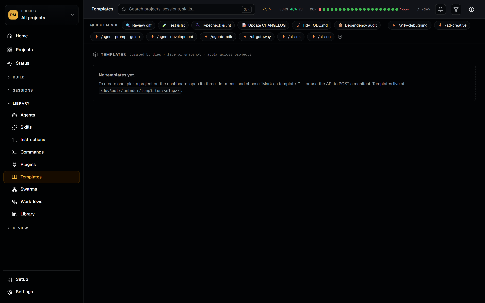
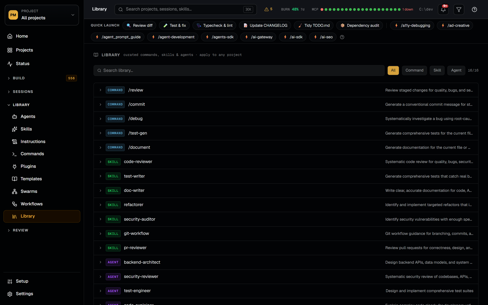

The Config Lint tab audits ten Claude Code surfaces — CLAUDE.md, skills, agents, commands, settings, hooks, MCP servers, plugins, output styles, and LSP config — with a three-pass engine combining an adapter pass, the claude-code-lint library, and vendored cross-scope rules that catch things like MCP-server name collisions across six different sources. Findings are graded P0 / P1 / P2, surface as count chips on the /agents, /skills, /commands, and /plugins browsers, and aggregate on the /stats page. A strict gate renders a green STRICT: PASS / red STRICT: FAIL badge — any P0 or P1 finding fails the bar, P2-only configs pass — and an interactive formatter (markdownlint + prettier, shellcheck when installed) previews which Claude files would be rewritten and, on an explicit click, applies the fix reversibly by snapshotting each target to Config History first. The MCP Security Scanner runs 58 pattern rules across 13 threat categories — prompt injection, credential harvesting, tool poisoning, covert exfiltration, command injection, sandbox circumvention, and more — with an 8-pass deobfuscation pipeline so zero-width, Base64, and Unicode-encoded payloads are still caught. Severity-coded chips appear inline on the MCP tab; expanding a row reveals rule IDs, surfaces, evidence excerpts. Config History wraps every Claude Code config write with a copy-on-write backup so any mutation can be restored from a smart-retention vault (24 h all, 1/day for 7d, 1/week for 30d).

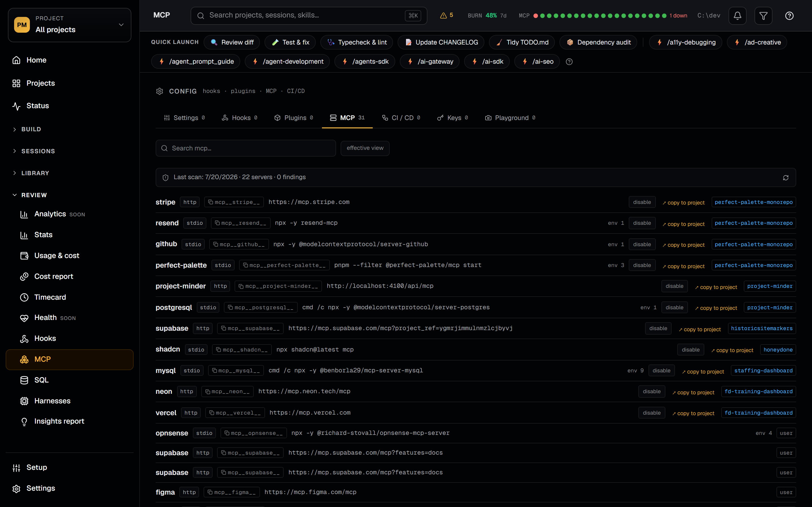
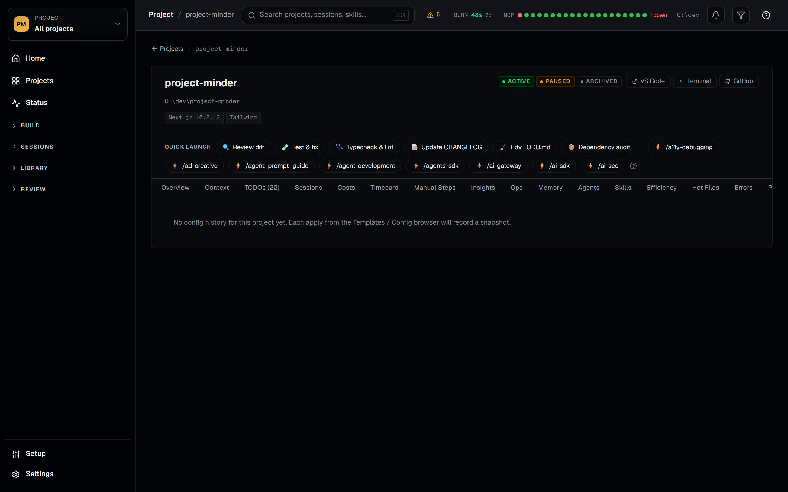
Every Claude Code session gets indexed into a SQLite FTS5 store and scored across ten quality dimensions — cache TTL expiry, cache thrash, context bloat, near-compaction state, compaction loops, tool-failure streaks, idle bursts, context-dominated turns, resume anomalies, and known-buggy CLI versions. The session detail page renders a replay timeline with retry-cycle highlights (Edit → test → re-edit loops the parser recognizes), a scrubber for stepping through turn-by-turn, fenced-code rendering, and on-demand extended-thinking expansion so heavy reasoning blocks don't bloat the default view. The Diagnosis tab turns the quality scores into a ranked findings list with explanations and remediations — "your cache hit rate dropped from 92% to 41% after the compaction at turn 84", "three consecutive tool failures on Bash before the model recovered" — actionable feedback you can apply to the next session. Session ↔ ticket linking surfaces a chip per distinct issue-tracker URL a session references — ENG-123 (Linear), PROJ-45 (Jira), or owner/repo#42 (GitHub issue) — alongside the existing PR chips on the project Sessions tab; click any chip to filter the list to sessions referencing that ticket or pull request.


The Cost Report ranks every project by spend for a single period (today, 7 days, 30 days, 90 days, 1 year, or all time) in one sortable table, and any row that matches a currently scanned project drops straight into that project's own Costs tab with per-model and per-category breakdowns. Spend from directories you no longer scan still appears in the ranking rather than quietly vanishing from your totals. Pricing is tier-aware rather than a flat per-token guess: long-context requests bill at the above-200K rates including the cache read and write rates that make up most of a long-context bill, and Fast mode bills as the premium tier it actually is. Stored per-turn costs re-price themselves when a pricing formula changes, so a correction repairs your history instead of only applying to sessions you run afterwards.
Timecard answers a different question: not what the tokens cost, but how much of the session you were actually there for, in billable hours. It reconstructs attended time from the transcript's own timing and discounts the overlap when several agents were running at once, so two sessions in the same hour bill as one hour and not two. Three thresholds are tunable in the UI with the corpus-measured default shown for each: an idle threshold for how long the agent may sit silent before your next prompt and still count as watching, an agent-run cap for the most credit one uninterrupted run can earn, and a flat tail credit for reading and verifying after your last prompt, which leaves no transcript trace. Totals break down per project in decimal hours, with CSV export ready to paste into a timesheet.
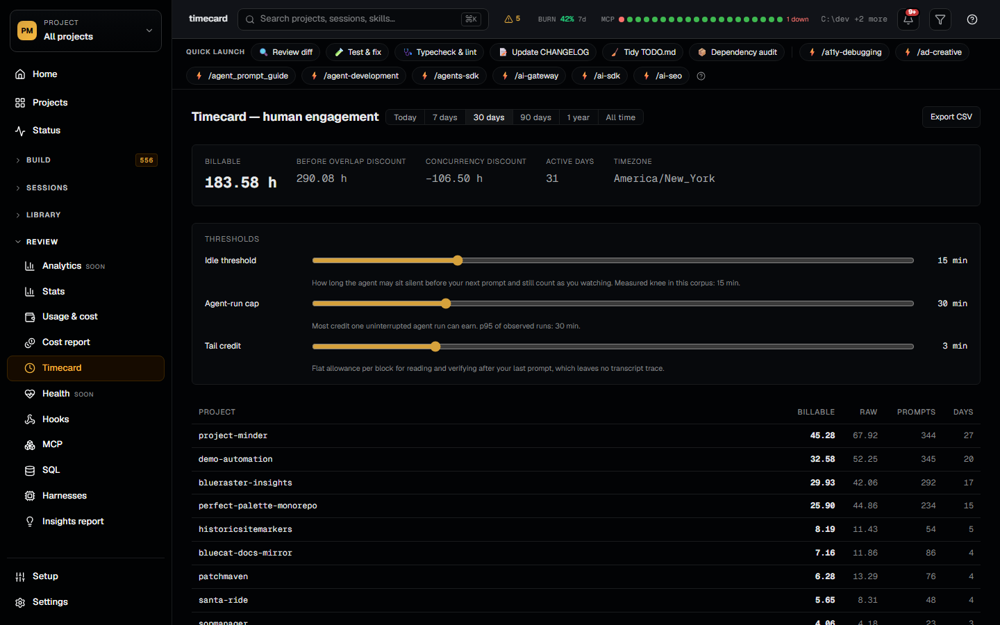
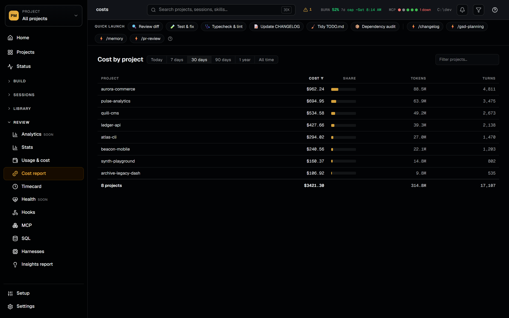
Get alerted the moment Claude adds a manual step, hits a permission prompt, or approaches a spending cap — without leaving the project you're working on. Notifications support three channels: browser push (works with the tab closed, with subscription management per-device), Telegram (bot token + chat ID configured in Settings → Integrations), and in-tab OS notifications. Each event toggles its channels independently, and a Send test push button bypasses the dedup window so you can verify delivery. Cost caps set a tier-aware budget (subscription, daily, or per-session) — Project Minder shows a daily-spend banner with the active cap, an amber warning as you approach it, and a red breach state when exceeded. Currency selection and overridable model-pricing rules let the cost numbers reflect your actual billing.


For when you need to go deeper. The Commands catalog indexes every slash command across user, plugin, and project scope with allowed-tools, argument hints, body excerpts, and one-click "copy to project". The SQL browser exposes the indexed session database directly — full schema sidebar and a results table, for when the built-in dashboards don't slice it the way you need. The Plans browser tracks GSD phase plans across all repos. Schedule manages cron-scheduled remote agent routines (create, update, run on demand). Health watches port conflicts, file-watcher status, MCP server health, and database integrity. The Insights Report viewer sandboxes and renders claude /insights's HTML output inline with server-side sanitization, polling for regeneration. Adapter settings enable Claude Code, Codex, and Gemini session sources independently so you can index sessions from every coding agent you use. The Harnesses page (route /adapters) goes one step further with a read-only view of an enabled harness's own config home — the Codex adapter reads ~/.codex/config.toml and its instruction files — with secret redaction applied on the server before anything leaves it: tokens, API keys, and auth headers are blanked wholesale while the surrounding keys stay visible, so you can see that something is configured without exposing its value. View-only by design, never an edit or copy affordance.
The Workflows catalog folds Claude Code's per-session workflow scripts into one row per workflow rather than one per run, which turns a directory of near-identical copies into an answer to "which workflows do I actually use, and how often." The Instructions browser is its counterpart for the other harnesses: enable the Codex or Gemini adapter and it catalogs their native instruction files (Codex rules, AGENTS.md, and prompts; Gemini's GEMINI.md) with the projected context cost of each, so you can see what a session pays to read before it starts. Read-only, and opt-in per harness.
And Project Minder answers questions from inside Claude, not just in the browser. It ships its own MCP server over Streamable HTTP: point Claude Code or Claude Desktop at it and Claude can query your token usage, sessions, agents and skills catalogs, OTEL telemetry, manual steps, insights, git status, and portfolio stats directly, plus write to the board. Tools call the library functions in-process rather than looping back over HTTP, and the transport's DNS-rebinding protection restricts accepted Host and Origin headers to the loopback names — localhost, 127.0.0.1, [::1] — on whichever port the server actually bound, so a custom port keeps working and the default one stops being trusted. That guards the browser attack it is meant for; if you want the socket itself unreachable from the network, bind the server to loopback.
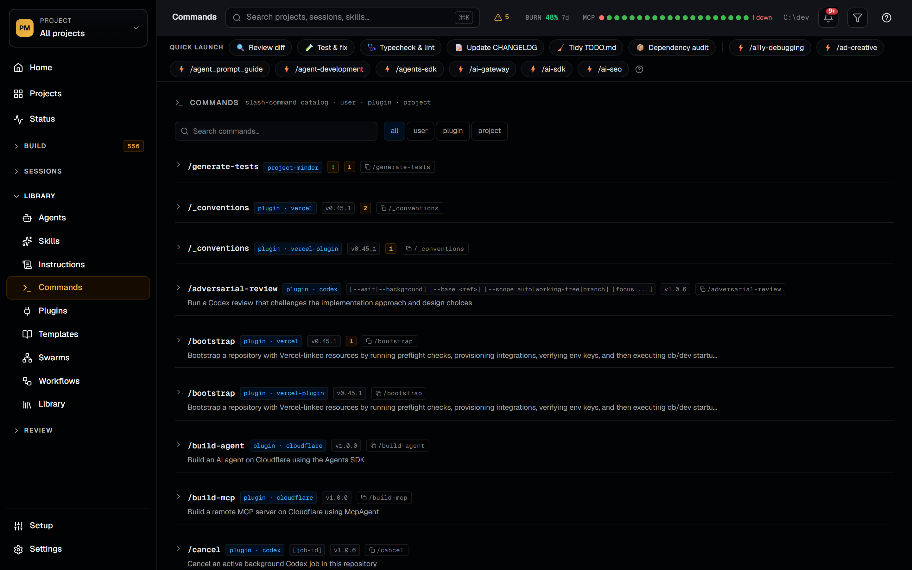
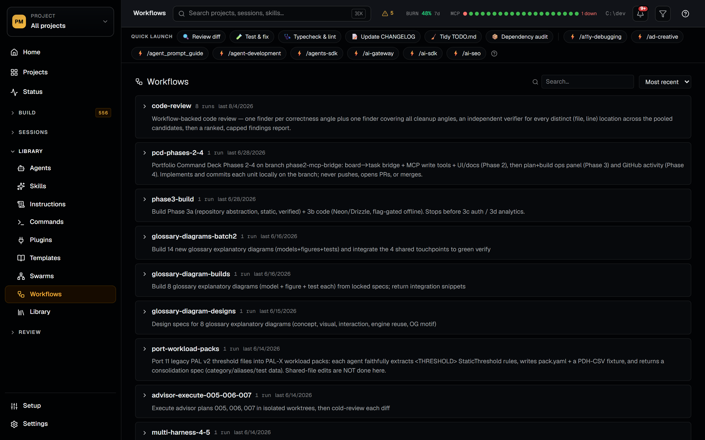


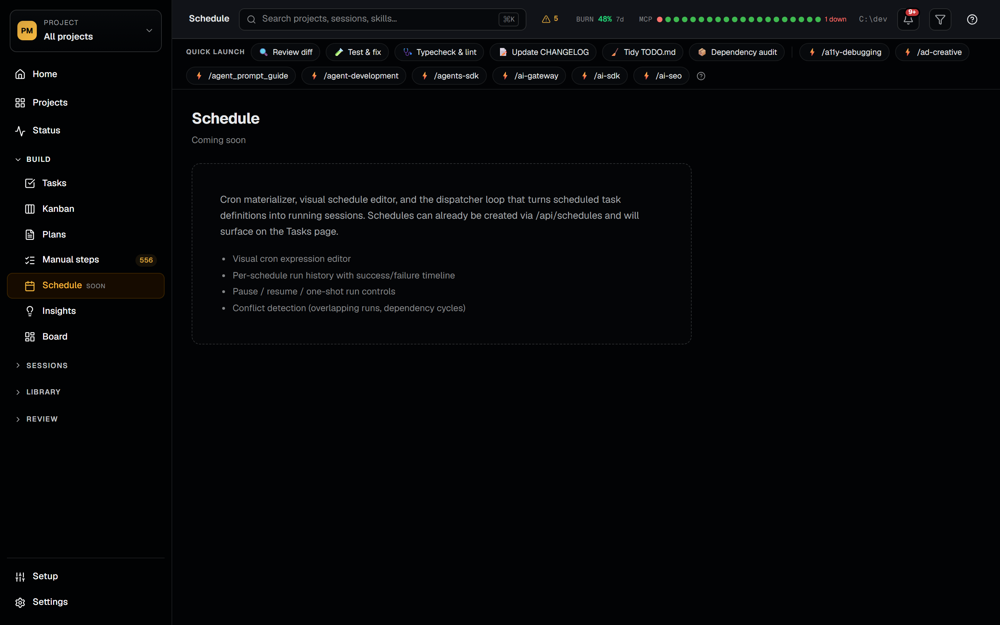
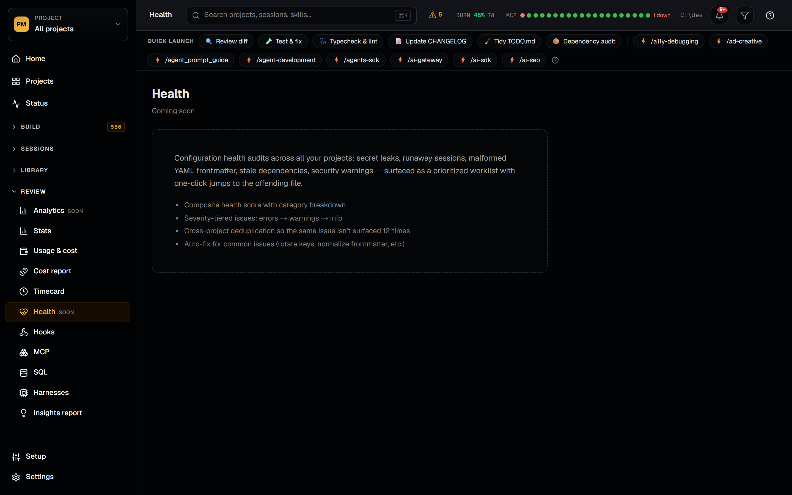


The fastest route is the desktop app: grab the installer for your platform from GitHub Releases — Windows .exe, macOS Apple Silicon .dmg, macOS Intel .app.tar.gz (extract, then drag to Applications), Linux x86_64 .AppImage / .deb. It bundles the dashboard server and its own Node runtime, drops a tray icon, and opens the UI at localhost:4100. Nothing else to install. The builds are unsigned, so the first launch needs a nudge past the OS: on Windows, SmartScreen → More info → Run anyway; on macOS, right-click the app → Open.
Or run it from source:
git clone https://github.com/joshuatownsend/project-minder.git
cd project-minder
pnpm install
# create .minder.json in the repo root:
# { "devRoots": ["~/dev"] } (Windows: "C:\\dev")
pnpm dev # open http://localhost:4100
# just want a look around? demo mode swaps most read surfaces
# for deterministic sample data (Timecard is off in demo mode):
MINDER_DEMO=1 pnpm dev # macOS / Linux / Git Bash
$env:MINDER_DEMO=1; pnpm dev # Windows PowerShellPrerequisites: Node.js ≥ 22.12 and pnpm (corepack enable picks up the pinned version) · macOS, Linux, or Windows
{kind=link}
{kind=link}
{kind=link}
{kind=link}
{kind=link}
{kind=link}
{kind=link}
{kind=link}
{kind=link}
{kind=link}
{kind=link}
{kind=link}
{kind=link}
{kind=link}
{kind=link}
{kind=link}
{kind=link}
{kind=link}
{kind=link}
{kind=link}
{kind=link}
{kind=link}
{kind=link}
{kind=link}
{kind=link}
{kind=link}